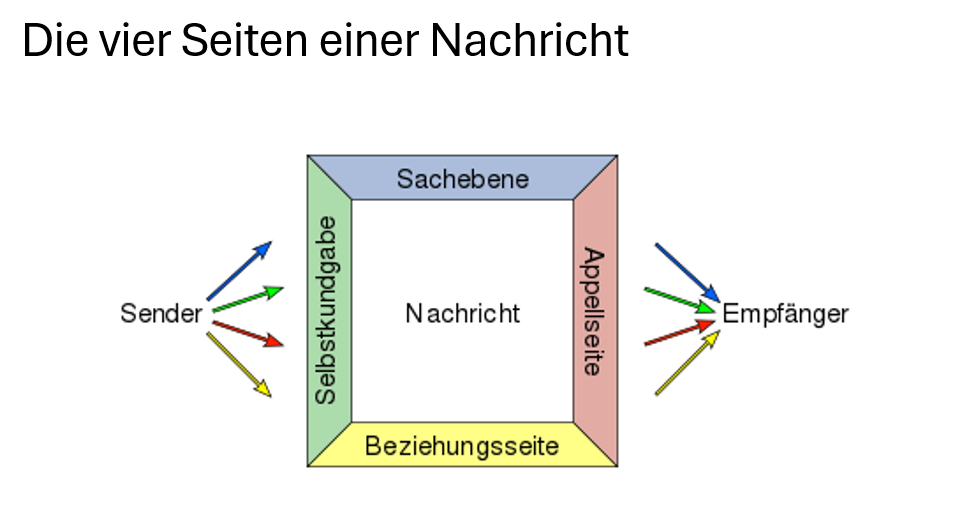

Übersicht
Das Modul "Kommunikation und Präsentation" bietet eine Einführung in die Grundlagen effektiver Präsentationen und Kommunikationsstrategien. Es kombiniert theoretisches Wissen mit praktischen Übungen, um Präsentationen zielgerichtet und wirkungsvoll zu gestalten.
Inhalte
- Rahmenbedingungen: Zielgruppenanalyse, Zieldefinitionen, Struktur und Inhalte einer Präsentation.
- Präsentationsdesign: Einsatz von Folien, Visualisierungen und Medien.
- Kommunikationsstrategien: Körpersprache, Stimme und nonverbale Kommunikation.
- Umgang mit Herausforderungen: Fehleranalyse und Improvisation.
- Selbstmanagement: Selbstsicherheit und Stressmanagement während einer Präsentation.
Ablauf
- Theoretische Grundlagen:
- Einführung in Präsentationsmethoden und Kommunikationsstrategien.
- Diskussion über den roten Faden und Zielgruppenanalyse.
- Praktische Übungen:
- Vorbereitung und Durchführung von Präsentationen.
- Feedbackrunden und Analyse von Verbesserungspotenzialen.
- Erprobung von Improvisationstechniken.
- Projekte:
- Entwicklung und Durchführung einer Präsentation zu einem selbst gewählten Thema.
Ziele des Moduls
Studierende sollen die Fähigkeit erlangen, Präsentationen zielgerichtet und wirkungsvoll zu gestalten. Das Modul vermittelt Kompetenzen im Umgang mit verschiedenen Präsentationsmethoden, Medien und Kommunikationssituationen.
Beispiel
Eines der Kommunikationsmodelle
